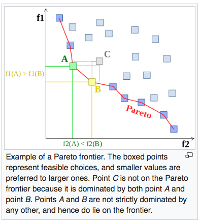
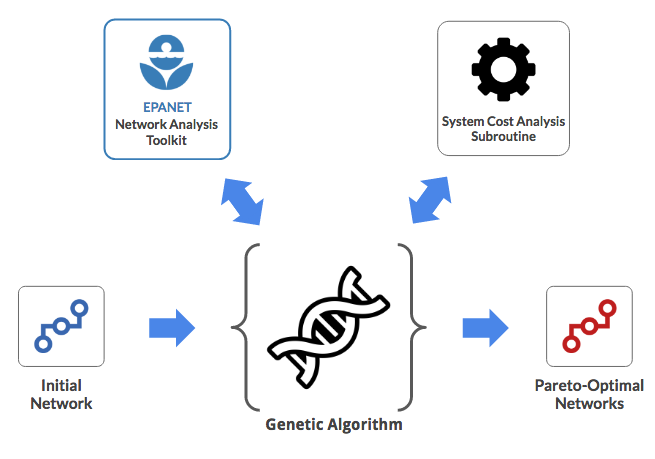

A safe, reliable source of water is fundamental to the health, economy, and wellbeing of communities. However, the design, construction, operation and maintenance of water supply systems require significant resources. This application uses genetic algorithm to simultaneous optimization of multiple system characteristics to identify Pareto-optimal systems. Allowing decision makers to make tradeoff decisions based an optimal set of options.
The application is written in C/C++.
Project Code on: GitHub
Motivation
Designer, operators and owners of water supply systems need to balance system characteristics such as security, system reliability, construction cost, operating & maintenance costs, energy requirements and greenhouse gas emissions. This myriad of system requirements makes it difficult to optimize existing and proposed water supply systems.
Pareto Optimum Systems
This application identifies Pareto-optimal system configurations for water supply networks. Pareto-optimal configurations cannot be modified to make a particular aspect of the system better without causing another aspect of the system to worsen. The diagram below illustrates the system configurations that are Pareto-optimal with respect to system performance characteristics f1 and f2.

System Architecture
 Initially, the user specifies the water supply network configuration to be optimized, as well as a database of system component costs. This information is fed into the genetic algorithm, which uses the EPANET network analysis toolkit to evaluate system performance characteristics (eg. supply pressure, flows & flow velocities, as well as pumping cycles & duration). The total system costs are then calculated using the system cost analysis module. The multi-variate system performance metric are then used as a basis for optimization.
System Architecture
I'll explain the working of the genetic algorithm in the Part II.